使用 URDF 创建机器人
本文介绍如何使用 URDF 创建一个简单机器人，包括 XML 编写、模型显示和 RViz 配置。
1、在功能包目录下添加 urdf 目录，并在该文件夹下创建一个 urdf 文件。

为了开发方便可以在Vscode 里安装 urdf 插件。
2、编写 XML 描述一个机器人，参考一下代码
<?xml version="1.0"?>
<robot name="my_robot">
<!-- robot's body -->
<link name="base_link">
<!-- firmware appearance description -->
<visual>
<!-- 沿着自己几何中心的偏移和旋转 -->
<origin xyz="0.0 0.0 0.0" rpy="0.0 0.0 0.0"/>
<!-- 几何形状 -->
<geometry>
<!-- 形状是圆柱体 -->
<cylinder radius="0.10" length="0.2"/>
</geometry>
<!-- 材质颜色 -->
<material name="white">
<color rgba="1.0 1.0 1.0 0.5"/>
</material>
</visual>
</link>
<!-- 机器人的IMU部件 -->
<link name="imu_link">
<!-- firmware appearance description -->
<visual>
<!-- 沿着自己几何中心的偏移和旋转 -->
<origin xyz="0.0 0.0 0.0" rpy="0.0 0.0 0.0"/>
<!-- 几何形状 -->
<geometry>
<box size="0.02 0.02 0.02"/>
</geometry>
<!-- 材质颜色 -->
<material name="black">
<color rgba="0.0 0.0 0.0 0.5"/>
</material>
</visual>
</link>
<!-- 机器人的关节，用于组合机器人的部件 -->
<joint name="imu_name" type="fixed">
<!-- 部件固定的位置 部件的中心相对于机器人的中心-->
<origin xyz="0.0 0.0 0.03" rpy="0.0 0.0 0.0"/>
<parent link="base_link"/>
<child link="imu_link"/>
</joint>
</robot>3、通过 urdf_to_graphiz 把 URDF 中的机器人连接关系画成一张图
在终端输入命令：
urdf_to_graphiz urdf_name.urdf4、通过 Rviz 查看 urdf 模型
选择 file

点 Description File 选择创建的 urdf 文件

可以看到有两个错误，原因是没有节点发布 map 到 base_link 与 map 到 imu_link 的TF

将基准坐标系改为 base_link 可以消除 base_link 的错误，但 imu_link 的错误还在，这是为什么？ 原因是 Rviz 不用读取 urdf 里的 TF 关系，只会接收节点发送的 TF 关系。

解决这个报错就需要下载两个工具去发布机器人与部件的 TF 关系，所以我用到了两个工具 robot-state-publisher 与 joint-state-publisher，他们的配合关系如下：

打开终端安装这两个工具
sudo apt install ros-$ROS_DISTRO-join-state-publisher
sudo apt install ros-$ROS_DISTRO-robot-state-publisher由于用终端启动这两个节点太麻烦了，所有最好还是写一个 launch 示例如下：
import launch
import launch_ros
from launch_ros.parameter_descriptions import ParameterValue
from ament_index_python.packages import get_package_share_directory # 找到 share/包名 这一层
def generate_launch_description():
default_urdf_path = get_package_share_directory('mybot_describtion') + '/urdf' + '/my_robot.urdf'
default_rviz_path = get_package_share_directory('mybot_describtion') + '/rviz' + '/urdf_config.rviz'
action_declare_urdf_path = launch.actions.DeclareLaunchArgument(
'urdf_model',
default_value=default_urdf_path
)
action_declare_rviz_path = launch.actions.DeclareLaunchArgument(
'rviz_config',
default_value=default_rviz_path
)
urdf_path = launch.substitutions.LaunchConfiguration('urdf_model')
rviz_path = launch.substitutions.LaunchConfiguration('rviz_config')
# get the urdf content from its path
content_result = launch.substitutions.Command(['cat ',urdf_path])
robot_description_value = ParameterValue(content_result,value_type=str) #防止 launch 自动猜测参数类型，指明所有内容按字符串读取
action_robot_state_publisher_node = launch_ros.actions.Node(
package='robot_state_publisher', #pkg name
executable='robot_state_publisher', #exe name
parameters=[{"robot_description":robot_description_value}]
)
action_joint_state_publisher_node = launch_ros.actions.Node(
package='joint_state_publisher', #pkg name
executable='joint_state_publisher', #exe name
)
action_riviz_node = launch_ros.actions.Node(
package='rviz2', #pkg name
executable='rviz2', #exe name
arguments=['-d', rviz_path],
)
return launch.LaunchDescription([
action_declare_urdf_path,
action_declare_rviz_path,
action_robot_state_publisher_node,
action_joint_state_publisher_node,
action_riviz_node
])可以看到报错都消失了

5、使用 Xacro 去简化 urdf 的编写
在前面用 XML 去编写 urdf 时可以看到如果机器人有多个部件其实很多代码都是重复的，这很明显违法了 DRY 原则，所以我们最好用 Xacro 去简化 urdf 的编写，Xacro 最大的好处呢就是在编写 urdf 时候能够创建与使用宏（就相当于函数），能够极大的降低代码的重复率。
先创建一个 xacro 文件：

参考如下代码：
<?xml version="1.0"?>
<robot xmlns:xacro="http://www.ros.org/wiki/xacro" name="my_robot">
<!-- 定义一个机器人宏 -->
<xacro:macro name="base" params="radius length">
<!-- robot's body -->
<link name="base_link">
<!-- firmware appearance description -->
<visual>
<!-- 沿着自己几何中心的偏移和旋转 -->
<origin xyz="0.0 0.0 0.0" rpy="0.0 0.0 0.0"/>
<!-- 几何形状 -->
<geometry>
<!-- 形状是圆柱体 -->
<cylinder radius="${radius}" length="${length}"/>
</geometry>
<!-- 材质颜色 -->
<material name="white">
<color rgba="1.0 1.0 1.0 0.5"/>
</material>
</visual>
</link>
</xacro:macro>
<!-- 定义一个IMU部件宏 -->
<xacro:macro name="imu" params="imu_name x y z ">
<!-- 机器人的IMU部件 -->
<link name="${imu_name}_link">
<!-- firmware appearance description -->
<visual>
<!-- 沿着自己几何中心的偏移和旋转 -->
<origin xyz="0.0 0.0 0.0" rpy="0.0 0.0 0.0"/>
<!-- 几何形状 -->
<geometry>
<box size="0.02 0.02 0.02"/>
</geometry>
<!-- 材质颜色 -->
<material name="black">
<color rgba="0.0 0.0 0.0 0.5"/>
</material>
</visual>
</link>
<!-- 机器人的关节，用于组合机器人的部件 -->
<joint name="${imu_name}_joint" type="fixed">
<!-- 部件固定的位置 部件的中心相对于机器人的中心-->
<origin xyz="${x} ${y} ${z}" rpy="0.0 0.0 0.0"/>
<parent link="base_link"/>
<child link="${imu_name}_link"/>
</joint>
</xacro:macro>
<xacro:base length="0.12" radius="0.1"/>
<xacro:imu imu_name="up_imu" x="0.0" y="0.0" z="0.05"/>
<xacro:imu imu_name="down_imu" x="0.0" y="0.0" z="-0.05"/>
</robot>虽然也是一坨看得人不想写，但可以看到定义两个 IMU 部件只需要再加一行代码即可，所以在多部件情况下可帮了我们大忙。
接下来就需要把这个 xacro 文件转换为 urdf 文件了 先在终端执行命令：
sudo apt install ros-$ROS_DISTRO-xacro现在就可以通过 xacro 加具体路径将 xacro 文件转化为 urdf 了

它会输出完整的 urdf 文件的内容到终端理，所以我们就可以改一下 launch 代码：

Rviz 理我们就可以改成 topic 的形式并设置 topic 为 /robot_description 这样就不用反复切换文件啦
6、创建一个自己的机器人（以 fishbot 为例）
先按照如下样式创建文件夹与文件：
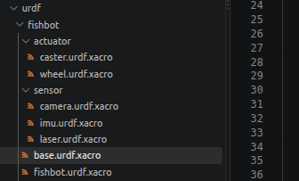
文件解析： actuator文件夹主要放的是执行器相关的部件如：轮子、万向轮、舵机等；
caster.urdf.xacro 用来描述万向轮，具体 xacro 代码如下：
<?xml version="1.0"?>
<robot xmlns:xacro="http://www.ros.org/wiki/xacro">
<!-- 定义一个caster部件宏 -->
<xacro:macro name="caster" params="caster_name x y z ">
<!-- 机器人的caster部件 -->
<link name="${caster_name}_link">
<!-- firmware appearance description -->
<visual>
<!-- 沿着自己几何中心的偏移和旋转 -->
<origin xyz="0.0 0.0 0.0" rpy="0.0 0.0 0.0"/>
<!-- 几何形状 -->
<geometry>
<sphere radius="0.02"/>
</geometry>
<!-- 材质颜色 -->
<material name="blue">
<color rgba="0.0 0.0 1.0 0.5"/>
</material>
</visual>
</link>
<!-- 机器人的关节，用于组合机器人的部件 -->
<joint name="${caster_name}_joint" type="fix">
<!-- 部件固定的位置 部件的中心相对于机器人的中心-->
<origin xyz="${x} ${y} ${z}" rpy="0.0 0.0 0.0"/>
<parent link="base_link"/>
<child link="${caster_name}_link"/>
</joint>
</xacro:macro>
</robot>就是用一个普通的球去代替，也没有转动滚动什么的
wheel.urdf.xacro 用来描述普通轮子，具体 xacro 代码如下：
<?xml version="1.0"?>
<robot xmlns:xacro="http://www.ros.org/wiki/xacro">
<!-- 定义一个wheel部件宏 -->
<xacro:macro name="wheel" params="wheel_name x y z ">
<!-- 机器人的wheel部件 -->
<link name="${wheel_name}_link">
<!-- firmware appearance description -->
<visual>
<!-- 沿着自己几何中心的偏移和旋转 -->
<origin xyz="0.0 0.0 0.0" rpy="${pi/2} 0.0 0.0"/>
<!-- 几何形状 -->
<geometry>
<cylinder radius="0.02" length="0.01"/>
</geometry>
<!-- 材质颜色 -->
<material name="blue">
<color rgba="0.0 0.0 1.0 0.5"/>
</material>
</visual>
</link>
<!-- 机器人的关节，用于组合机器人的部件 -->
<joint name="${wheel_name}_joint" type="continuous">
<!-- 部件固定的位置 部件的中心相对于机器人的中心-->
<origin xyz="${x} ${y} ${z}" rpy="0.0 0.0 0.0"/>
<parent link="base_link"/>
<child link="${wheel_name}_link"/>
<!-- 可以绕哪个轴旋转 -->
<axis xyz="0.0 1.0 0.0"/>
</joint>
</xacro:macro>
</robot>其主要思路就是用一个圆柱体然后 roll 转动个 90° 就可以模拟一轮了； 为了能像轮子一样去转动所以把关节设置为 “continuous” 表述该部件能够沿着某一轴转动。 就表示轮子能沿着y轴去转动。
sensor文件夹主要放的是传感器相关的部件如：相机、雷达、IMU等；
camera.urdf.xacro 用来描述相机，具体 xacro 代码如下：
<?xml version="1.0"?>
<robot xmlns:xacro="http://www.ros.org/wiki/xacro">
<!-- 定义一个camera部件宏 -->
<xacro:macro name="camera" params="camera_name x y z ">
<!-- 机器人的camera部件 -->
<link name="${camera_name}_link">
<!-- firmware appearance description -->
<visual>
<!-- 沿着自己几何中心的偏移和旋转 -->
<origin xyz="0.0 0.0 0.0" rpy="0.0 0.0 0.0"/>
<!-- 几何形状 -->
<geometry>
<box size="0.02 0.10 0.02"/>
</geometry>
<!-- 材质颜色 -->
<material name="black">
<color rgba="0.0 0.0 0.0 0.5"/>
</material>
</visual>
</link>
<!-- 机器人的关节，用于组合机器人的部件 -->
<joint name="${camera_name}_joint" type="fixed">
<!-- 部件固定的位置 部件的中心相对于机器人的中心-->
<origin xyz="${x} ${y} ${z}" rpy="0.0 0.0 0.0"/>
<parent link="base_link"/>
<child link="${camera_name}_link"/>
</joint>
</xacro:macro>
</robot>就是一个普通长方体的描述，这里就不在赘述了
imu.urdf.xacro 用来描述IMU，具体 xacro 代码如下：
<?xml version="1.0"?>
<robot xmlns:xacro="http://www.ros.org/wiki/xacro">
<!-- 定义一个IMU部件宏 -->
<xacro:macro name="imu" params="imu_name x y z ">
<!-- 机器人的IMU部件 -->
<link name="${imu_name}_link">
<!-- firmware appearance description -->
<visual>
<!-- 沿着自己几何中心的偏移和旋转 -->
<origin xyz="0.0 0.0 0.0" rpy="0.0 0.0 0.0"/>
<!-- 几何形状 -->
<geometry>
<box size="0.02 0.02 0.02"/>
</geometry>
<!-- 材质颜色 -->
<material name="black">
<color rgba="0.0 0.0 0.0 0.5"/>
</material>
</visual>
</link>
<!-- 机器人的关节，用于组合机器人的部件 -->
<joint name="${imu_name}_joint" type="fixed">
<!-- 部件固定的位置 部件的中心相对于机器人的中心-->
<origin xyz="${x} ${y} ${z}" rpy="0.0 0.0 0.0"/>
<parent link="base_link"/>
<child link="${imu_name}_link"/>
</joint>
</xacro:macro>
</robot>lase.urdf.xacro 用来描述雷达，具体 xacro 代码如下：
<?xml version="1.0"?>
<robot xmlns:xacro="http://www.ros.org/wiki/xacro">
<!-- 定义一个laser部件宏 -->
<xacro:macro name="laser" params="laser_name x y z ">
<!-- 机器人的laser部件支撑柱 -->
<link name="${laser_name}_cylinder_link">
<!-- firmware appearance description -->
<visual>
<!-- 沿着自己几何中心的偏移和旋转 -->
<origin xyz="0.0 0.0 0.0" rpy="0.0 0.0 0.0"/>
<!-- 几何形状 -->
<geometry>
<cylinder radius="0.01" length="0.10"/>
</geometry>
<!-- 材质颜色 -->
<material name="black">
<color rgba="0.0 0.0 0.0 1.0"/>
</material>
</visual>
</link>
<!-- 机器人的laser部件 -->
<link name="${laser_name}_link">
<!-- firmware appearance description -->
<visual>
<!-- 沿着自己几何中心的偏移和旋转 -->
<origin xyz="0.0 0.0 0.0" rpy="0.0 0.0 0.0"/>
<!-- 几何形状 -->
<geometry>
<cylinder radius="0.02" length="0.02"/>
</geometry>
<!-- 材质颜色 -->
<material name="green">
<color rgba="0.0 1.0 0.0 0.5"/>
</material>
</visual>
</link>
<!-- 机器人的关节，用于组合机器人的部件 -->
<joint name="${laser_name}_cylinder_joint" type="fixed">
<!-- 雷达刚好在雷达固定杆中心的正上方 -->
<origin xyz="0.0 0.0 0.05" rpy="0.0 0.0 0.0"/>
<parent link="${laser_name}_cylinder_link"/>
<child link="${laser_name}_link"/>
</joint>
<joint name="${laser_name}_joint" type="fixed">
<origin xyz="${x} ${y} ${z}" rpy="0.0 0.0 0.0"/>
<parent link="base_link"/>
<child link="${laser_name}_cylinder_link"/>
</joint>
</xacro:macro>
</robot>这个部件由雷达与雷达的支架组成所以TF关系是机器人->支架->雷达，效果是这样的：
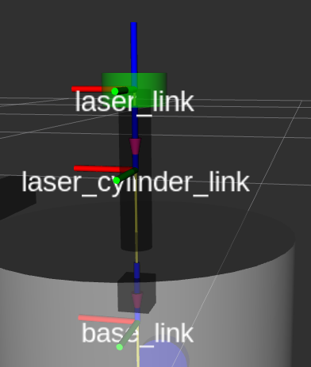
base.urdf.xacro 这个文件主要就是描述一个机器人的主体了，其 xacro 代码如下：
<?xml version="1.0"?>
<robot xmlns:xacro="http://www.ros.org/wiki/xacro">
<!-- 定义一个机器人宏 -->
<xacro:macro name="base" params="radius length">
<!-- 添加虚拟部件让机器人的底盘贴合地面 -->
<link name="base_footprint"/>
<!-- robot's body -->
<link name="base_link">
<!-- firmware appearance description -->
<visual>
<!-- 沿着自己几何中心的偏移和旋转 -->
<origin xyz="0.0 0.0 0.0" rpy="0.0 0.0 0.0"/>
<!-- 几何形状 -->
<geometry>
<!-- 形状是圆柱体 -->
<cylinder radius="${radius}" length="${length}"/>
</geometry>
<!-- 材质颜色 -->
<material name="white">
<color rgba="1.0 1.0 1.0 0.5"/>
</material>
</visual>
</link>
<joint name="base_footprint_joint" type="fixed">
<origin xyz="0.0 0.0 ${length/2+0.02}" rpy="0.0 0.0 0.0"/>
<parent link="base_footprint"/>
<child link="base_link"/>
<axis xyz="0.0 0.0 0.0"/>
<limit lower="0.0" upper="0.0" effort="0.0" velocity="0.0"/>
</joint>
</xacro:macro>
</robot>机器人本质就是一个简单的圆柱体其效果为：
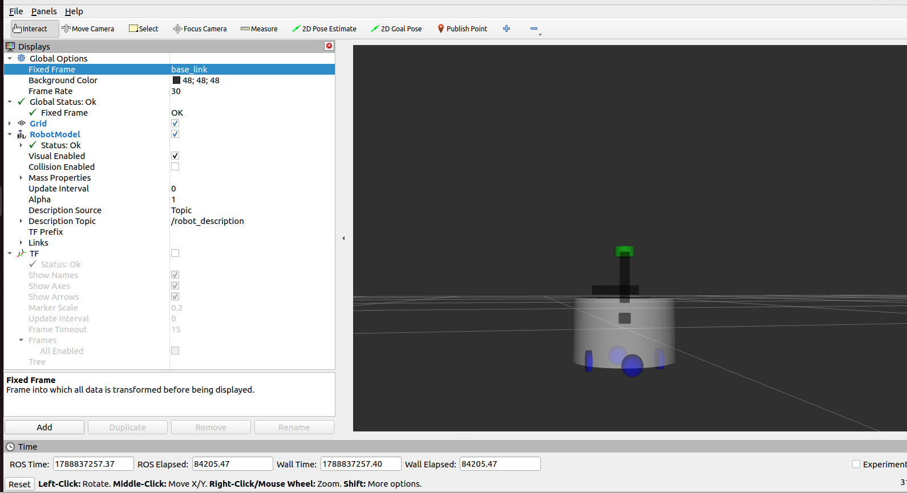
可以看到机器人一半都在z轴的负半轴，为了能够让机器人贴合地面我们就得做一个虚拟的部件 base_footprint， base_footprint 与 base_link 之间的 TF 关系正好能消除小车最底部到z轴平面的距离， 然后让 Rviz 基准坐标系变换为 base_footprint 这样就可以实现机器人贴合地面的设计思路。
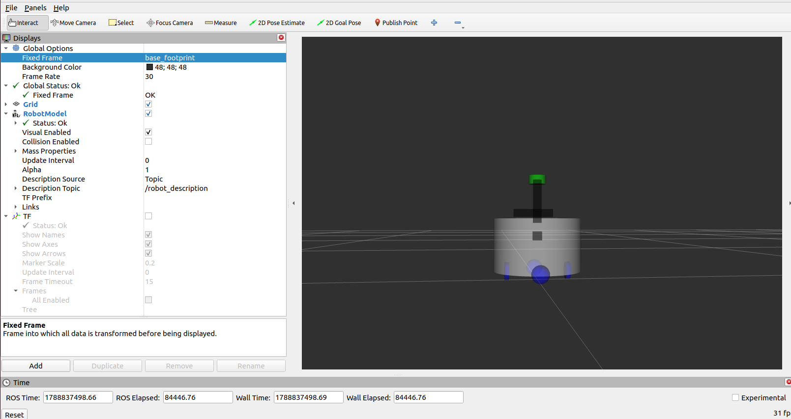
fishbot.urdf.xacro 就相当于是一个 main 函数把所有的部件都整合在一起，其 xacro 代码如下：
<?xml version="1.0"?>
<robot xmlns:xacro="http://www.ros.org/wiki/xacro" name="fishbot">
<!-- 会找到 share/包名这一层 -->
<xacro:include filename="$(find mybot_describtion)/urdf/fishbot/base.urdf.xacro" />
<xacro:include filename="$(find mybot_describtion)/urdf/fishbot/sensor/camera.urdf.xacro" />
<xacro:include filename="$(find mybot_describtion)/urdf/fishbot/sensor/imu.urdf.xacro" />
<xacro:include filename="$(find mybot_describtion)/urdf/fishbot/sensor/laser.urdf.xacro" />
<xacro:include filename="$(find mybot_describtion)/urdf/fishbot/actuator/caster.urdf.xacro" />
<xacro:include filename="$(find mybot_describtion)/urdf/fishbot/actuator/wheel.urdf.xacro" />
<xacro:base length="0.12" radius="0.1"/>
<xacro:camera camera_name="camera" x="0.08" y="0.0" z="0.075"/>
<xacro:imu imu_name="imu" x="0.0" y="0.0" z="0.02"/>
<xacro:laser laser_name="laser" x="0.0" y="0.0" z="0.10"/>
<xacro:caster caster_name="front_caster" x="0.07" y="0.0" z="-0.06"/>
<xacro:caster caster_name="back_caster" x="-0.07" y="0.0" z="-0.06"/>
<xacro:wheel wheel_name="left_wheel" x="0" y="0.07" z="-0.06"/>
<xacro:wheel wheel_name="right_wheel" x="0" y="-0.07" z="-0.06"/>
</robot>再描述这个机器人主体及其部件后，我们还需给机器人增加碰撞属性让机器人有更好的物理效果 如图所示，以机器人主体为例子，可以直接把 visual 的描述直接复制过来，如果形状过于复杂可以再增加碰撞属性那里把真实碰撞的图像简单化，这样就能方便计算了。
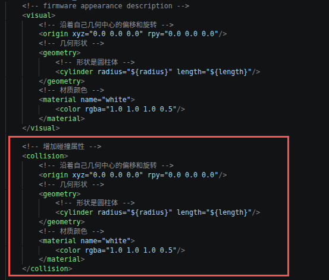
然后给使用部件都添加上碰撞属性就可以了
修改完后可以在 Rviz 里看到起效果：
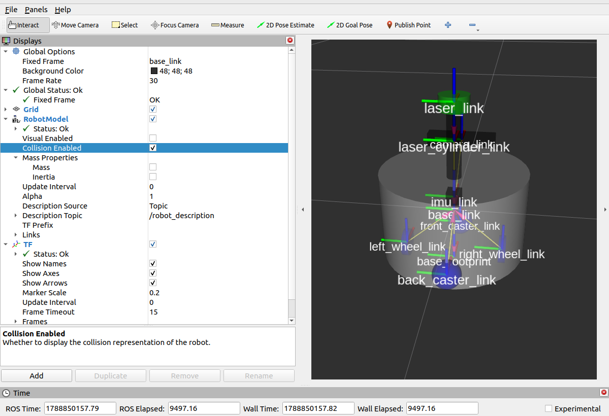
除了碰撞属性外，机器人应该还有质量与惯性，所以参考下图可以用矩阵的表示去描述圆形、圆柱、方体的惯性：
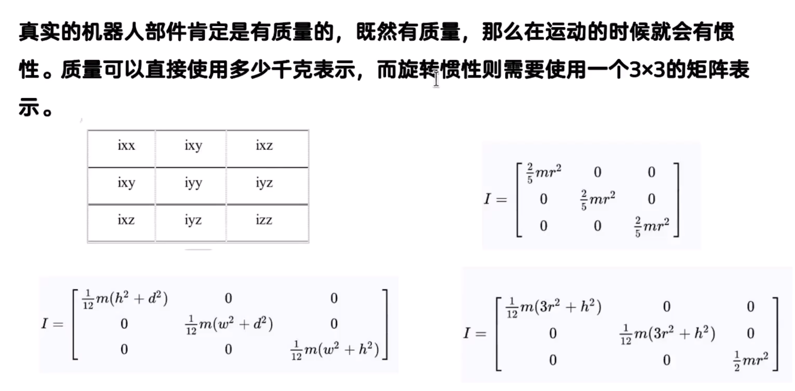
感觉公式有点复杂，所以直接复制别人的就行了
<?xml version="1.0"?>
<robot xmlns:xacro="http://ros.org/wiki/xacro">
<xacro:macro name="box_inertia" params="m w h d">
<inertial>
<mass value="${m}" />
<inertia ixx="${(m/12) * (h*h + d*d)}" ixy="0.0" ixz="0.0" iyy="${(m/12) * (w*w + d*d)}" iyz="0.0" izz="${(m/12) * (w*w + h*h)}" />
</inertial>
</xacro:macro>
<xacro:macro name="cylinder_inertia" params="m r h">
<inertial>
<mass value="${m}" />
<inertia ixx="${(m/12) * (3*r*r + h*h)}" ixy="0" ixz="0" iyy="${(m/12) * (3*r*r + h*h)}" iyz="0" izz="${(m/2) * (r*r)}" />
</inertial>
</xacro:macro>
<xacro:macro name="sphere_inertia" params="m r">
<inertial>
<mass value="${m}" />
<inertia ixx="${(2/5) * m * (r*r)}" ixy="0.0" ixz="0.0" iyy="${(2/5) * m * (r*r)}" iyz="0.0" izz="${(2/5) * m * (r*r)}" />
</inertial>
</xacro:macro>
</robot>把复制的代码放在一个文件夹里即可
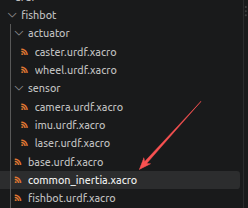
在每次调用时在文件顶部引用
<xacro:include filename="$(find mybot_describtion)/urdf/fishbot/common_inertia.xacro" />参考机器人主体的描述：
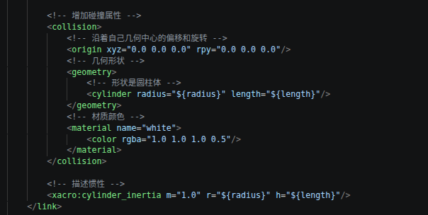
由于机器人主体是一个圆柱所以要用圆柱的宏，m的单位是千克。
在 gazebo 显示机器人
先下载 gazebo:
sudo apt install gazebo下多模型插件:
mkdir -p ~/.gazebo
cd ~/.gazebo
git clone https://gitee.com/ohhuo/gazebo_models.git ~/.gazebo/models删除模型仓库的 .git 目录，防止被误识别为模型：
rm -rf ~/.gazebo/models/.git在终端输入 gazebo 可验证是否安装成功
如果想在 gazebo 建堵墙的话可以点击 Edit 里的 Building Editor
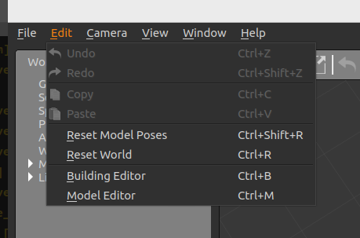
然后点击 wall 就能话一个围墙了：
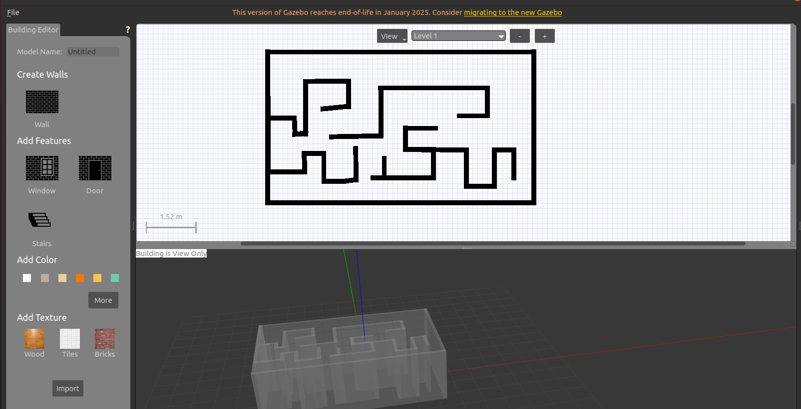
画完后点 File 里的 Exit Building Editor 再找个地方保存就行了
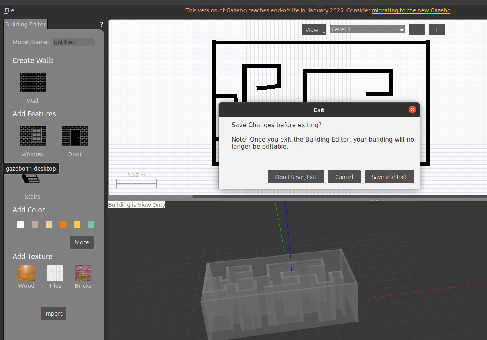
然后在 insert 就可以找到保存的围墙了
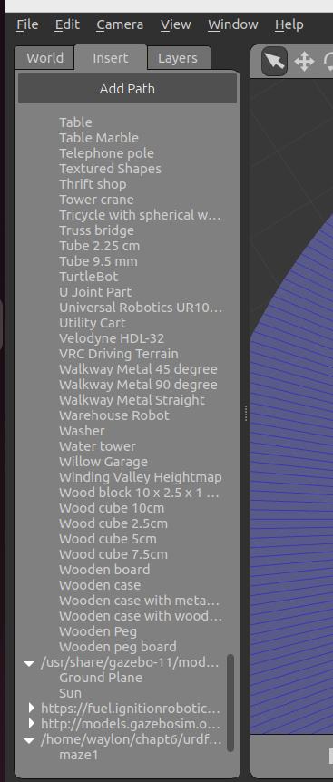
然后就是保存这个世界了，只需要点 File 然后 点 save world as 保存为一个后缀为.world的文件就可以了。
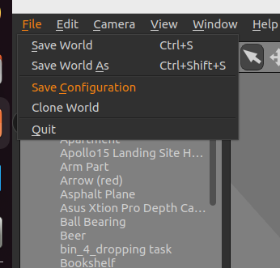
然后就是如何在 gazebo 中显示我们制作好的机器人了，因为 gazebo 要求模型要 sdf 的格式才能被加载，所以我们就得要将 xacro 转化为 urdf 文件再转化为 sdf 文件自己搞非常麻烦，所以我们就可以使用 ROS2 提供的功能包帮我干这个事。 现在安装功能包：
sudo apt install ros-$ROS_DISTRO-gazebo-ros-pkgs接下来就得新建一个launch起启动这个功能包与 gazebo 了 可以参考如下代码：
import launch
import launch_ros
from launch_ros.parameter_descriptions import ParameterValue
from ament_index_python.packages import get_package_share_directory # 找到 share/包名 这一层
from launch.launch_description_sources import PythonLaunchDescriptionSource
def generate_launch_description():
default_urdf_path = get_package_share_directory('mybot_describtion') + '/urdf' + '/fishbot' + '/fishbot.urdf.xacro'
# default_rviz_path = get_package_share_directory('mybot_describtion') + '/rviz' + '/urdf_config.rviz'
default_gazebo_world_path = get_package_share_directory('mybot_describtion') + '/world' + '/custom_maze.world'
action_declare_urdf_path = launch.actions.DeclareLaunchArgument(
'urdf_model',
default_value=default_urdf_path
)
action_declare_rviz_path = launch.actions.DeclareLaunchArgument(
'gazebo_world_config',
default_value=default_gazebo_world_path
)
urdf_path = launch.substitutions.LaunchConfiguration('urdf_model')
# rviz_path = launch.substitutions.LaunchConfiguration('rviz_config')
gazebo_world_path = launch.substitutions.LaunchConfiguration('gazebo_world_config')
# get the urdf content from its path
content_result = launch.substitutions.Command(['xacro ',urdf_path])
robot_description_value = ParameterValue(content_result,value_type=str) #防止 launch 自动猜测参数类型，指明所有内容按字符串读取
action_robot_state_publisher_node = launch_ros.actions.Node(
package='robot_state_publisher', #pkg name
executable='robot_state_publisher', #exe name
parameters=[{"robot_description":robot_description_value}]
)
# 启动gazebo
action_include_gazebo = launch.actions.IncludeLaunchDescription(
PythonLaunchDescriptionSource(
[get_package_share_directory('gazebo_ros'),'/launch','/gazebo.launch.py']
),
launch_arguments=[('world',gazebo_world_path),('verbose','true')]
)
# 运行这个节点即可将 urdf 格式转化为 sdf
action_spawn_entity = launch_ros.actions.Node(
package='gazebo_ros',
executable='spawn_entity.py',
arguments=['-topic','/robot_description','-entity','fishbot']
)
return launch.LaunchDescription([
action_declare_urdf_path,
action_declare_rviz_path,
action_robot_state_publisher_node,
action_include_gazebo,
action_spawn_entity
])代码解析： custom_maze.world 是我们前面保存的 gazebo 世界配置； 由于 gazebo 会替我们去发布关节消息所以我们就可以不运行joint_state_publisher; spawn_entity.py 就是那个可以将 urdf 文件转化为 sdf 的节点，然后它可以选择以文件或者话题的方式传入，我们就使用 robot_state_publisher 输出的话题就行，然后 entity 是给模型起个名字随便起就行；
写完后保存编译运行这个launch就可以看到咱们的机器人模型了，但可以看到这个机器人好像全身都是灰色的，是因为Gazebo Classic 和 RViz 对材质的处理方式不同。想部件正常显示颜色就得添加 gazebo 标签 例如：
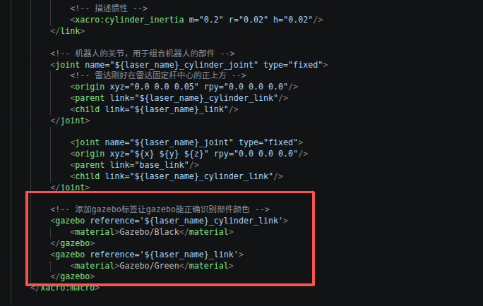
这样雷达支撑杆就是黑色，雷达就是绿色，然后给使用需要上色的部件添加该标签即可；
添加完后再运行就可以看到可以正常显示颜色了
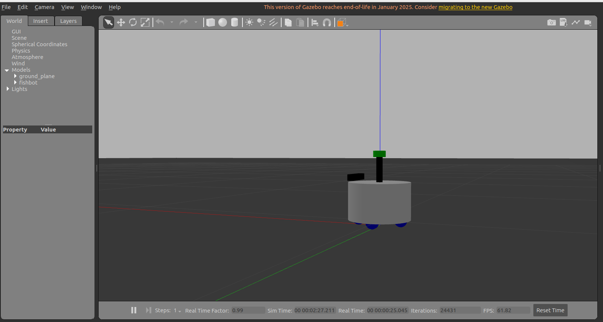
接下来就可以插件去控制机器人了，我们用到了的是两轮差速插件 libgazebo_ros_diff_drive.so 去控制小车移动了 其控制框图如下：
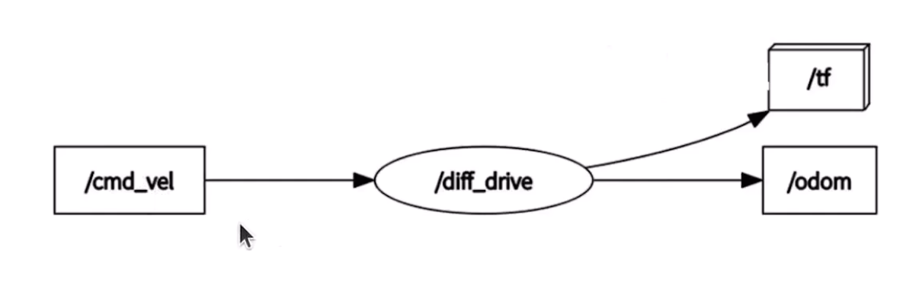
这款 Gazebo 插件会创建普通 ros 节点包，通过/cmd_vel就能控制小车移动，同时还会发布小车的 tf 与里程计消息
我们先创建一个 plugin 目录以及创建一个xacro文件，代码可参考：
<?xml version="1.0"?>
<robot xmlns:xacro="http://www.ros.org/wiki/xacro">
<xacro:macro name="gazebo_control_plugin">
<gazebo>
<plugin name='diff_drive' filename='libgazebo_ros_diff_drive.so'>
<ros>
<namespace>/</namespace>
<remapping>cmd_vel:=cmd_vel</remapping>
<remapping>odom:=odom</remapping>
</ros>
<update_rate>30</update_rate>
<!-- wheels -->
<left_joint>left_wheel_joint</left_joint>
<right_joint>right_wheel_joint</right_joint>
<!-- kinematics -->
<wheel_separation>0.2</wheel_separation>
<wheel_diameter>0.064</wheel_diameter>
<!-- limits -->
<max_wheel_torque>20</max_wheel_torque>
<max_wheel_acceleration>1.0</max_wheel_acceleration>
<!-- output -->
<publish_odom>true</publish_odom>
<publish_odom_tf>true</publish_odom_tf>
<publish_wheel_tf>true</publish_wheel_tf>
<odometry_frame>odom</odometry_frame>
<robot_base_frame>base_footprint</robot_base_frame>
</plugin>
</gazebo>
</xacro:macro>
</robot>然后在 fishbot.urdf.xml里包含该文件：
<xacro:include filename="$(find mybot_describtion)/urdf/fishbot/plugins/gazebo_control_plugin.xacro" />再添加其宏的调用即可
<xacro:gazebo_control_plugin/>然后我们就可以通过键盘去控制小车了
ros2 run teleop_twist_keyboard teleop_twist_keyboardi 前进， , 后退， j 原地左转， l 原地右转。
接下来就可以添加对传感器的仿真了 可以参考如下代码：
<?xml version="1.0"?>
<robot xmlns:xacro="http://www.ros.org/wiki/xacro">
<xacro:macro name="gazebo_sensor_plugin">
<gazebo reference="laser_link">
<sensor name="laserscan" type="ray">
<plugin name="laserscan" filename="libgazebo_ros_ray_sensor.so">
<ros>
<namespace>/</namespace>
<remapping>~/out:=scan</remapping>
</ros>
<output_type>sensor_msgs/LaserScan</output_type>
<frame_name>laser_link</frame_name>
</plugin>
<always_on>true</always_on>
<visualize>true</visualize>
<update_rate>5</update_rate>
<pose>0 0 0 0 0 0</pose>
<!-- 激光传感器配置 -->
<ray>
<!-- 设置扫描范围 -->
<scan>
<horizontal>
<samples>360</samples>
<resolution>1.000000</resolution>
<min_angle>0.000000</min_angle>
<max_angle>6.280000</max_angle>
</horizontal>
</scan>
<!-- 设置扫描距离 -->
<range>
<min>0.120000</min>
<max>8.0</max>
<resolution>0.015000</resolution>
</range>
<!-- 设置噪声 -->
<noise>
<type>gaussian</type>
<mean>0.0</mean>
<stddev>0.01</stddev>
</noise>
</ray>
</sensor>
</gazebo>
<gazebo reference="imu_link">
<sensor name="imu_sensor" type="imu">
<plugin name="imu_plugin" filename="libgazebo_ros_imu_sensor.so">
<ros>
<namespace>/</namespace>
<remapping>~/out:=imu</remapping>
</ros>
<initial_orientation_as_reference>false</initial_orientation_as_reference>
</plugin>
<update_rate>100</update_rate>
<always_on>true</always_on>
<!-- 六轴噪声设置 -->
<imu>
<angular_velocity>
<x>
<noise type="gaussian">
<mean>0.0</mean>
<stddev>2e-4</stddev>
<bias_mean>0.0000075</bias_mean>
<bias_stddev>0.0000008</bias_stddev>
</noise>
</x>
<y>
<noise type="gaussian">
<mean>0.0</mean>
<stddev>2e-4</stddev>
<bias_mean>0.0000075</bias_mean>
<bias_stddev>0.0000008</bias_stddev>
</noise>
</y>
<z>
<noise type="gaussian">
<mean>0.0</mean>
<stddev>2e-4</stddev>
<bias_mean>0.0000075</bias_mean>
<bias_stddev>0.0000008</bias_stddev>
</noise>
</z>
</angular_velocity>
<linear_acceleration>
<x>
<noise type="gaussian">
<mean>0.0</mean>
<stddev>1.7e-2</stddev>
<bias_mean>0.1</bias_mean>
<bias_stddev>0.001</bias_stddev>
</noise>
</x>
<y>
<noise type="gaussian">
<mean>0.0</mean>
<stddev>1.7e-2</stddev>
<bias_mean>0.1</bias_mean>
<bias_stddev>0.001</bias_stddev>
</noise>
</y>
<z>
<noise type="gaussian">
<mean>0.0</mean>
<stddev>1.7e-2</stddev>
<bias_mean>0.1</bias_mean>
<bias_stddev>0.001</bias_stddev>
</noise>
</z>
</linear_acceleration>
</imu>
</sensor>
</gazebo>
</xacro:macro>
<gazebo reference="camera_link">
<sensor type="depth" name="camera_sensor">
<plugin name="depth_camera" filename="libgazebo_ros_camera.so">
<frame_name>camera_optical_link</frame_name>
</plugin>
<always_on>true</always_on>
<update_rate>10</update_rate>
<camera name="camera">
<horizontal_fov>1.5009831567</horizontal_fov>
<image>
<width>800</width>
<height>600</height>
<format>R8G8B8</format>
</image>
<distortion>
<k1>0.0</k1>
<k2>0.0</k2>
<k3>0.0</k3>
<p1>0.0</p1>
<p2>0.0</p2>
<center>0.5 0.5</center>
</distortion>
</camera>
</sensor>
</gazebo>
</robot>这段代码添加了对深度相机、IMU、雷达的模拟，在fishbot.urdf.xacro里跟添加运动插件一样去添加文件如何添加如下代码即可：
<xacro:gazebo_sensor_plugin/>然后保存编译。
IMU 的仿真： 只要在程序运行起来之后执行
ros2 topic echo /imu --once即可看到它的三轴加速度计数据也是十分贴合现实的：
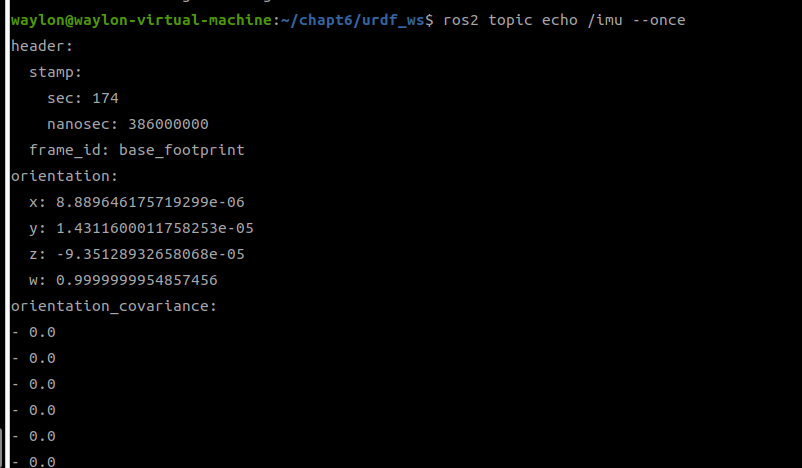
激光雷达的仿真： 只要我们在程序运行起来后在 Rviz 里订阅 /scan 这个话题，就可以看到点云了。


相机仿真： 由于相机要求光学坐标系是右下前(xyz)与 Rviz 里的前左上不符合啊，所以我们就要新建一个虚拟部件为相机提供一个正确的坐标系。 参考如下代码：
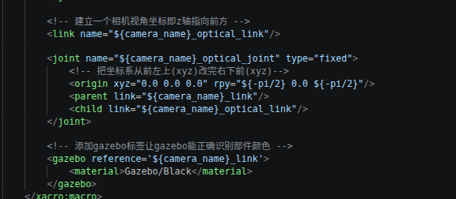
在 Rviz 可以看到这样的转化结果
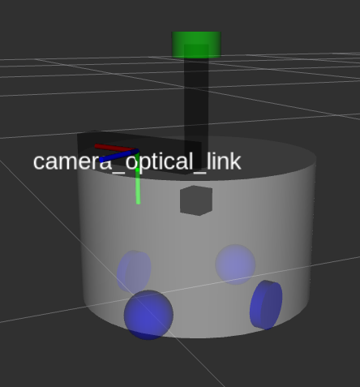
这样就可以在 Rviz 订阅相机话题去查看图像了
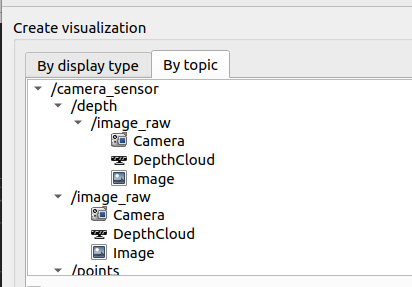
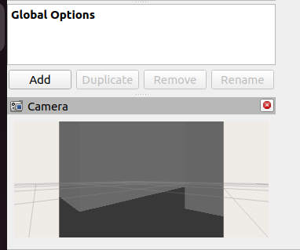